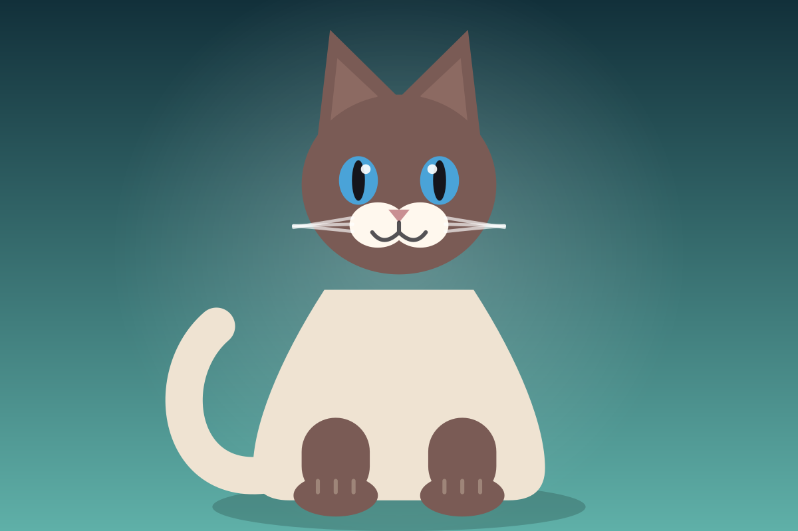
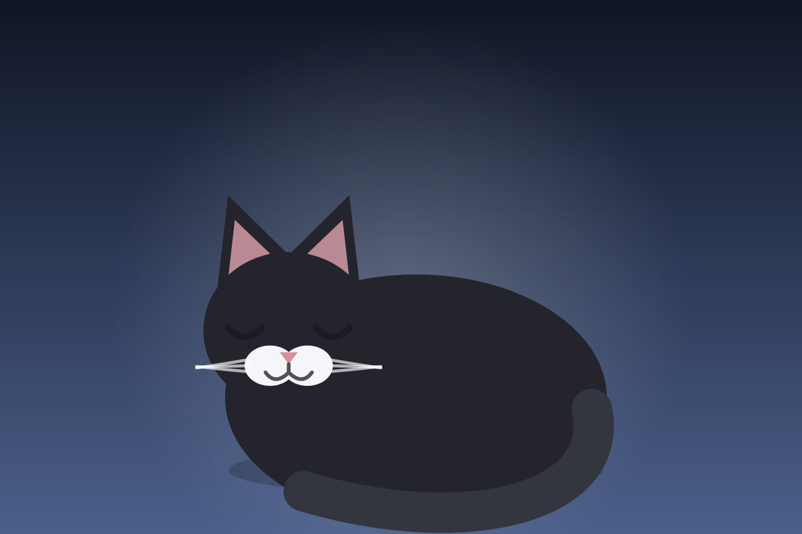

Galerie
Six chats, six robes. Même recette à chaque fois : un fond en dégradé, une silhouette en aplats, quelques traits pour le museau et les moustaches. Ce sont des SVG — quelques kilo-octets chacun, nets à n'importe quelle taille.




Pourquoi du SVG
Une photo de 2 Mo met du temps à charger en 4G et pèse dans le dépôt. Ces chats font
entre 2 et 4 ko, restent parfaites sur un écran de téléphone comme en plein écran, et se modifient
dans un éditeur de texte. Les images hors du premier écran sont chargées en différé
(loading="lazy").